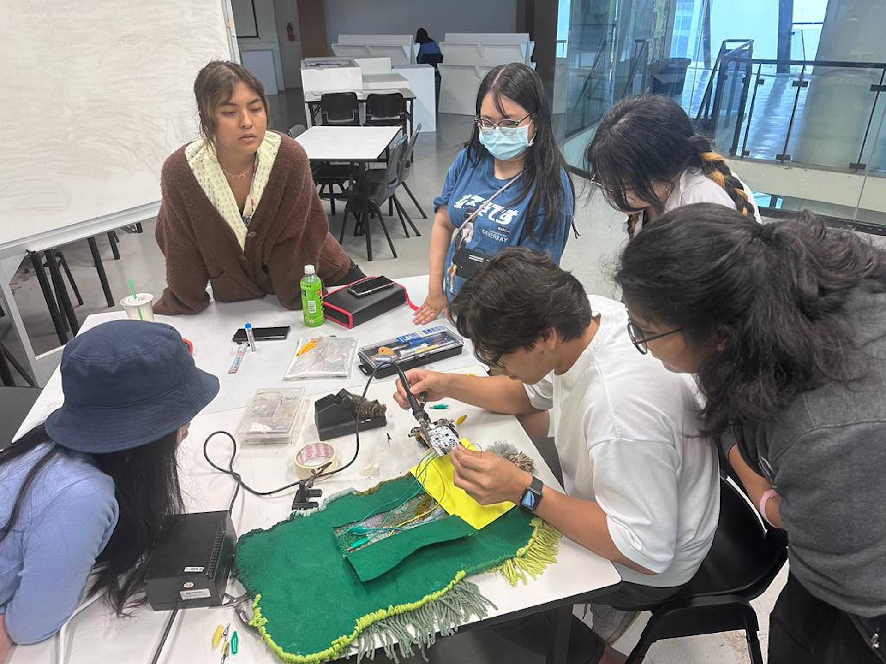

Week 11: Open Studio Planning
Consultation, Table Planning and More Electronics.
Took a long break from school work after the Dissertation submissions, it’s time to head back into things.
Consultation
We had class sharing session surrounding our current table setups for Open Studios; briefly explaining our ‘presentation’ and flow of content. The way my table was set up was pretty simple, split into 3 segments as recommended by Andreas:
- Intro
- Progress
- Insights/Key Learnings
Visuals
The main feedback for mine in terms of content was to add more information about the target audience. Additionally, the images I had chosen lack in value in terms of adding to the narrative of “helping people in hospitals” as they mainly show close-up shots of the experiments. If I wanted to quickly transport people into my project’s framing, the images have to display that; meaning it has to show people, within some form of a waiting area, interacting with the object.
Story
Additionally, the written content that I had for the conclusion was way too ‘scientific’ as they involve data about heart rate and more. Instead of sounding too ‘correct’ for a lack of a better term, it should promote the changes in feelings instead. I had brought in my monitor to be a part of the interactive element of my setup but based on feedback, it would be more value-adding to have the screen display videos of how the objects work (since we won’t necessarily be around to explain the works).
Hierarchy
General feedback for us all was to look at the table display as a ‘inDesign’ canvas and place images and information according to some form of a grid. Andreas was also kind enough to loan us pieces of wood and acrylic panels to build up our display vertically to add hierarchy to the information and to also cement the content in a more professional manner.
While personally I don’t agree with his very structured approach, I also don’t have a better idea in terms of how I’d set up my content. He recommends we explore beyond our Pinterest rabbit holes and to look at magazine displays instead.
Current setup mainly kept the same, showcased in 3 parts except the interactive prototype segment will be removed to be just a video display of how users are expected to interact with the Positive Distractions.
Using clear acrylic and wood planks, I’ve elevated and flattened main pieces of information. The centrepiece is a 3 segment platform that will display working (moving but not interactive) prototypes of water and greenery while also having enough space for short descriptions and large use-case images for when no visuals are on screen.
For special cases when I am around, I can swap the on-screen visuals with the working interactive prototype that’ll allow visitors to interact with the facial recognition model.
Main issues with the current setup revolve around the intro and conclusion segments.
In terms of aesthetics, it feels bare. The content could be elevated with striking copy and more relevant images that can immediately transport visitors to the context of study almost immediately.
For the conclusion, I’m still not sure what narrative to display that shows the study has been insightful so far.
A short sharing on Soldering

Andreas held a short session with a small group of us on how to solder and why it might benefit us that are taking part in physical computational projects.
I personally have faced issues with my wires getting pulled out from the boards especially if the connection isn’t as tight anymore due to wear and tear so soldering the wires directly would definitely benefit me in the long term. However, I wasn’t sure whether I could afford to solder to my currently scarce amount of materials.
After trying it out myself, it definitely helps to maintain the wires in their spot as its physically fused onto the board. But I think at the stage we’re at currently, it might not be a good idea as I still wish to continue experimenting and not use up my resources. I’m not sure whether after I solder an item onto my Arduino Uno that I’m able to successfully desolder and use it for another experiment. The process that Andreas showed us seemed to be ‘dirty’ at best meaning the state of the board will not be at it’s original best.
But it was definitely a useful experience getting to solder. For one, I now know the steps needed to achieve a proper solder so the next time I decide to do it for my own project, I’ll know what I need and what I need to do so no time is wasted figuring all that out myself.
Timeline
Currently working on the model drawings for the improved versions of water and greenery aspects. The main changes to the two would be the mechanical movements inspired by automata which are basically just a system of cogs and wheels that create a smoother movement from the motor to the physical objects being moved (i.e. acrylic panels and plant)
Aside from that, I’m also exploring ways to hide the electronics and ensure connectivity to power. The main issue I’m facing beyond that is the interactive portion. How do I ensure that the electronics are able to function without the need of being connected to a laptop? Do I need to do this? Probably not something I need to focus on since my main role is on the experience rather than the internal workings. But knowing a workaround would definitely help in how I will present my work during Viva Voce if I intend of having an interactive portion during the presentation.
I believe I’ve found a good compromise in hiding electronics, and ensuring a working prototype. I’ve not done this type of mechanism before so it’s really wishful thinking that I get it up and about on the first try.
Bought some standoffs for the Arduino Uno board that allows me to connect the stepper motor’s control board within the same surface area. Along with shorter wires, it’s significantly reduced the square metre area filled up just by wiring. The only compromise is the DC out cable to connect a power source (9V battery for this case).
I’m gonna conduct a test cut with spare acrylic material and see whether all the pieces can come together well before committing to a full wood enclosure.
If alls good, I can then continue on to recording some clips and take photos to use as display.